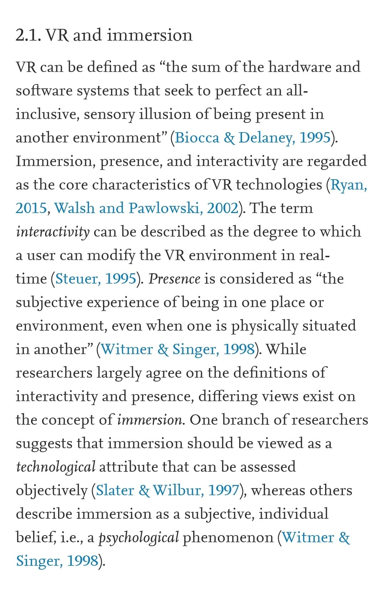
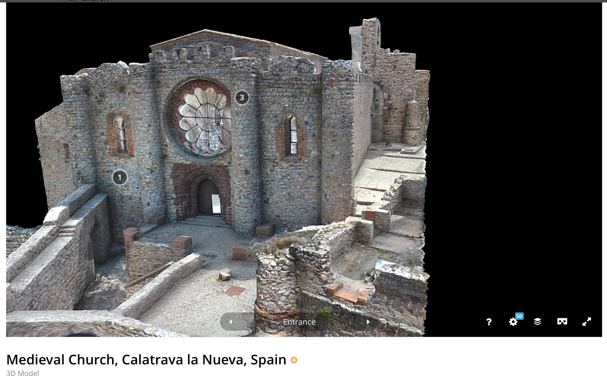
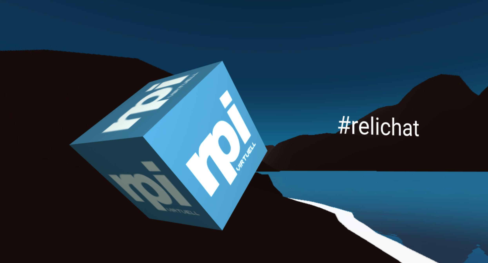
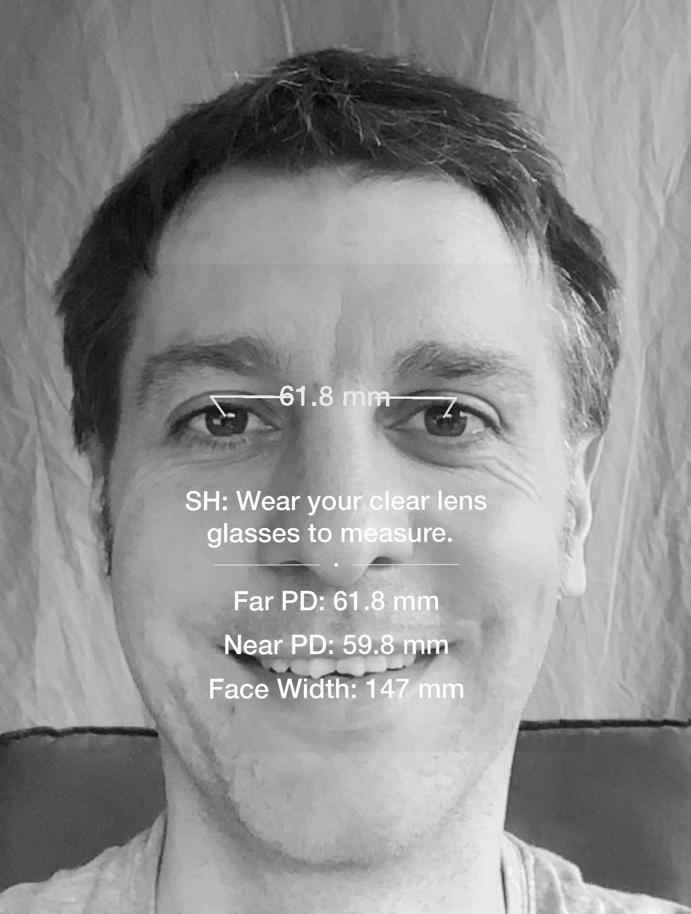
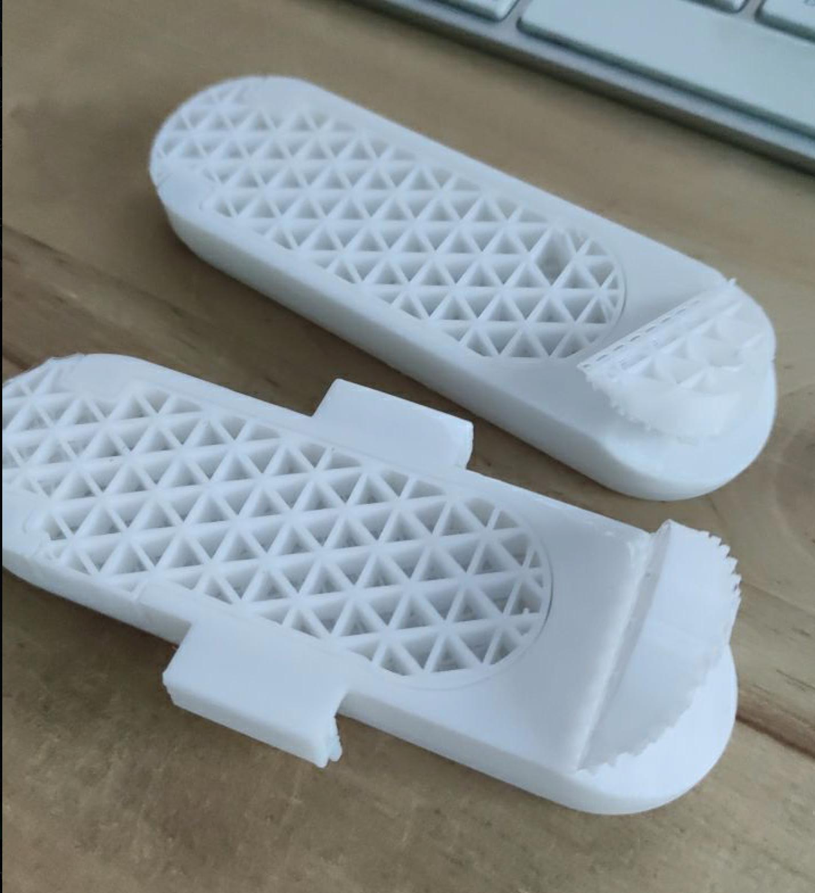
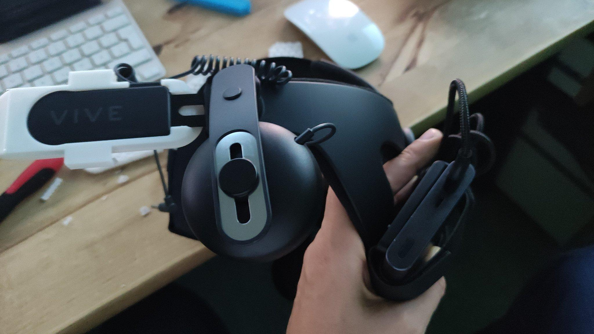

VR - Virtual Reality
Ausschreibung Torsten & Jörg
Ausgehend vom Lernbaustein https://relilab.org/vr/ beschäftigen wir uns in diesem Workshop mit Immersion und praktischen Beispielen im Themenbereich VR/AR. Neben der Vermittlung von theoretischen Grundlagen besprechen wir die Einsatzmöglichkeit im Religionsunterricht am Beispiel einer Reihe zu Schöpfungsmythen. Darüber hinnaus bieten wir die Gelegenheit zu Erfahrungsaustausch, Diskussion und exemplarischen Erlebnismöglichkeiten in der virtuellen Realität.
Theorie
Immersion & Präsenz
https://www.immersivelearning.institute/ https://omnia360.de/blog/was-ist-immersion/ https://en.wikipedia.org/wiki/Immersive_learning

https://www.sciencedirect.com/science/article/pii/S0360131519303276Forschung
A Public Database of 360 Videos with Corresponding Ratings of Arousal and Valence https://vhil.stanford.edu/360-video-database/
“Diese Studie ergänzt die spärliche, aber wachsende Literatur, indem sie den Transfer von Fertigkeiten aus der realen Welt durch Virtual Reality in einer sportlichen Aufgabe demonstriert.”
https://mixed.de/vr-und-philosophie-youtuber-zeigt-ungewoehnliche-vr-apps/amp/ Der norwegische Forscher Joakim Vindenes unterhält einen Blog, Podcast und Youtube-Kanal, in denen er außergewöhnliche VR-Apps vorstellt und sich mit der philosophischen Dimension des Mediums auseinandersetzt.
https://www.youtube.com/watch?v=VY5HaEhUm2Q A look at what it would be like to plug into an infinite VR experience machine.
Religionen
https://www.matrise.no/2019/06/hinduism-and-virtual-reality/
https://www.matrise.no/2020/01/the-existential-problem-of-vr-existentialism/
Empathie
https://www.youtube.com/watch?v=L6m79wqNiMA&feature=youtu.be&t=150
“VR is a storytelling vehicle, but it’s an empathy vehicle.”
Therapie
Feeling Good during the COVID19 Epidemic Virtual Reality Can Help Us to Overcome the Psychological Burden of Coronavirus - https://www.covidfeelgood.com/home
Die Verkörperung von Mitgefühl in der virtuellen Realität und ihre Auswirkungen auf Patienten mit Depressionen https://scitec-media.ch/2016/03/04/game-technologien-helfen-gegen-depressionen/ https://www.youtube.com/watch?v=GwxJVCESc-E https://www.cambridge.org/core/journals/bjpsych-open/article/embodying-selfcompassion-within-virtual-reality-and-its-effects-on-patients-with-depression/
Theater
https://www.brendanabradley.com/futurestages
Körperlichkeit
https://www.matrise.no/2018/07/virtual-embodiment/ https://www.matrise.no/2020/10/virtual-reality-depersonalization-derealization/
Praxis
Padlets
- [https://padlet.com/petiteprof79/xrinfo(https://padlet.com/petiteprof79/xrinfo)] XR-Info - Stephanie Wössner | CC BY-SA @petiteprof79
- https://padlet.com/strsa/ar Augmented Reality (AR) & 360°, (VR) | Gestartet von Tobias Erles (@Mr_Airless) und Sabine Strauss (@Sallythechin) beim Barcamp #wildcampen18, erweitert bei #wildcampen19 zusammen mit Jan Hartwig (@hartifical)
Artikel
Unterricht
- Eine Auswahl an Unterrichtsbeispielen mit Virtual Reality Szenarien von Stephanie Wössner @petiteprof79
Communities
Religiöse Erfahrungsräume
im Oculus Store
Wander
https://www.oculus.com/experiences/quest/2078376005587859/
Filme
[https://mixed.de/beruehrender-oculus-film-zeigt-worauf-es-im-leben-ankommt/(https://mixed.de/beruehrender-oculus-film-zeigt-worauf-es-im-leben-ankommt/)]
In Sidequest
Vanishing Grace
[https://sidequestvr.com/app/772/vanishing-grace-pre-alpha-demo(https://sidequestvr.com/app/772/vanishing-grace-pre-alpha-demo)]
Vanishing Grace ist eine emotionale Reise über die Opfer, die wir bringen müssen, um unseren Platz in der Welt einzunehmen.
Cubism
[https://sidequestvr.com/app/403/cubism-demo(https://sidequestvr.com/app/403/cubism-demo)]
Deism
The virtual reality god simulator [https://sidequestvr.com/app/85/deisim(https://sidequestvr.com/app/85/deisim)]
Liminal
https://sidequestvr.com/app/1042/liminal Wählen Sie aus, wie Sie sich fühlen und was Sie leisten wollen: Ruhe, Energie, Schmerzlinderung und Ehrfurcht.
3D-Modelle
https://sketchfab.com/3d-models/abandoned-warehouse-interior-scene-1d5285f2e0fd4211a27c8042496d5959#

CC BY-NC Medieval Church, Calatrava la Nueva, Spain Processed in Reality Capture from 76 Faro laser scans and 4100 photographs https://sketchfab.com/3d-models/medieval-church-calatrava-la-nueva-spain-171a047c08bc4dd588cca5ac744e8065Avatare
Erfahrungswelten:
360 Grad Filme
- Kölner Dom in 360°: Privatkonzert | WDR Der Domchor gibt ein nächtliches Konzert – und der einzige Zuschauer bist du. Unter Leitung des Domkapellmeisters Professor Eberhard Metternich singt der Chor das Ave Maria von Franz Biebl in einer eher ungewöhnlichen Aufstellung. Und du stehst mittendrin. https://dom360.wdr.de/privatkonzert-bei-nacht/]
- INSIDE AUSCHWITZ - Das ehemalige Konzentrationslager in 360° | WDR
Anne Frank VR
Within
[https://www.with.in/watch/the-ellen-fund-presents-gorillas-in-vr(https://www.with.in/watch/the-ellen-fund-presents-gorillas-in-vr)] [https://account.altvr.com/channels/VRChurch(https://account.altvr.com/channels/VRChurch)]
Programmierung
- Learn VR Development: Tips, tricks, and guides to develop VR and AR applications
- Reddit - Learn Virtual Reality Development
Mozilla Hubs
Dokumentation [https://hubs.mozilla.com/docs/welcome.html(https://hubs.mozilla.com/docs/welcome.html)]
Vorlagen
https://v3l.de/relilabvr (relilab-VR-Hub mit Videos, Bildern, …)
[https://hubs.mozilla.com/Av38AUU/detailed-tinted-room(https://hubs.mozilla.com/Av38AUU/detailed-tinted-room)] [https://hubs.mozilla.com/scenes/juMbRem/dramainvrhome(https://hubs.mozilla.com/scenes/juMbRem/dramainvrhome)]
Avatare erstellen
Mozilla Hubs - GLB
Online Dienst - Readyplayer
https://twitter.com/joerglohrer/status/1388023150626099201
[https://readyplayer.me/(https://readyplayer.me/)]
Beispiel: (CC BY-NC-SA - Wolfprint 3D) https://d1a370nemizbjq.cloudfront.net/10b05c49-593a-4616-82e9-adcea09aa66c.glb
Hubs by Mozilla
Blender files for AvatarBot Creating an Avatar using Hubs components in Blender
Online Editoren
[https://modelviewer.dev/editor/(https://modelviewer.dev/editor/)]
Software
MakeHuman
http://makehumancommunity.org/
https://www.youtube.com/watch?v=kQjp5DYsR_c&t=86s
Tutorials Altspace / Blender / Unity
http://edvschwab.de/Altspace/Kurz%20Doku%20Blender.pdf [http://edvschwab.de/Altspace/Kurz%20Doku%20Unity.pdf(http://edvschwab.de/Altspace/Kurz%20Doku%20Unity.pdf)]
Sidequest
https://sidequestvr.com/ Installation: https://sidequestvr.com/setup-howto
How to put custom songs onto Beat Saber on Oculus Quest
Aframe

https://codepen.io/joerglohrer/full/dyXQqWG https://aframe.io/ https://www.codecademy.com/learn/learn-a-frame VR development within VR with Oculus Quest + Firefox Reality + Glitch + https://rocketvirtual.com/index.html Where to begin with VR in a browser? https://www.reddit.com/r/WebVR/comments/equgdt/vr_development_within_vr_with_oculus_quest/https://aframe-model-viewer.glitch.me/
https://klausw.github.io/a-frame-car-sample/index.html
ThreeJS
https://threejs.org/ https://www.jesuisundev.com/en/understand-threejs/
Tour Creator Google
“Starting June 30, 2021, the Google Expeditions and Tour Creator will no longer be accessible.”
Unity
https://unity.com/de/learn/get-started
Optik
Pupillendistanz (PD) messen - IPD (interpupillary distance)
https://apps.apple.com/de/app/eyemeasure/id1417435049 Die kostenfreie App misst den Augenabstand auf 0,5 mm genau ab iPhoneX oder iPadPro

Oder einfach mit Lineal: https://imgur.com/a/gyYKBOculus Quest
Tutorials
Deutsch
Englisch
Foren
https://www.reddit.com/r/OculusQuest/ https://www.reddit.com/r/OculusQuest2/
Streaming / Playthrough / Livecasting / OBS
Oculus Quest Recording / Live Streaming Guide How to stream on Twitch: the ultimate guide
File Transfer
3 different ways https://www.youtube.com/watch?v=APbbuJF4Ma4 https://www.android.com/filetransfer/ Wie übertrage ich Bilder oder Videos von meinem Computer auf mein Oculus Quest 2 oder Quest?
Facebook video downloader here - https://fbdown.net/
Brillenträger
Sehstärke-Linsen Einsätze https://mixed.de/vr-optiker-sehstaerke-linsen-test/
- https://vroptiker.de/sehstaerke-linsen-einsaetze/oculus-quest2/
- https://widmovr.com/product/oculus-quest-2-prescription-lens-adapters/
Not to do
Sonnenlicht in die Linse)
Sonnenlicht kann durch die Linsen gebündelt werden und das Display beschödigen.
Linsen reinigen
Grips - Handhalterungen
https://www.youtube.com/watch?v=_52xWr_R4uM&feature=youtu.be&t=388
Headstrap
VIVE DELUXE AUDIO STRAP
https://www.vive.com/de/accessory/vive-deluxe-audio-strap/
FrankenQuest 2 https://uploadvr.com/frankenquest-2-quest-2/ Adapter zum 3D-Druck: https://www.thingiverse.com/thing:4622970 Variante mit Kabelklemme (oben oder unten): https://www.thingiverse.com/thing:4628600/files

:::success Druck skaliert auf 101% ::: Install guide Remove the Quest 2 straps following this guide: https://www.youtube.com/watch?v=PejiYjR7_44&feature=youtu.be&t=110 Snap the DAS onto the adaptor (pushing the round front section in first like in the picture). Snap the adaptor onto Quest 2. Use the velcro loop to attach the head strap to the headset.
Oculus Quest 2 Comfort Head Strap Mods!
3DDruck
Oculus Quest 2 Elite Strap_V2_NAVIDA DESIGN [https://www.thingiverse.com/thing:4630780/files(https://www.thingiverse.com/thing:4630780/files)] Oculus Link Cable Clip for Deluxe Audio Strap “DAS” https://www.thingiverse.com/thing:4666749
Überblick: https://www.youtube.com/watch?v=sUhMk19PVq4 https://www.youtube.com/watch?v=CN9fYlUGVtk
Lens Adaptor
Für Brillen
[https://www.thingiverse.com/thing:3653631(https://www.thingiverse.com/thing:3653631)] Für Linsen [https://www.thingiverse.com/thing:3642004(https://www.thingiverse.com/thing:3642004)]
Esimen Upgrade K3
Batterie
https://www.androidcentral.com/best-oculus-quest-battery-pack